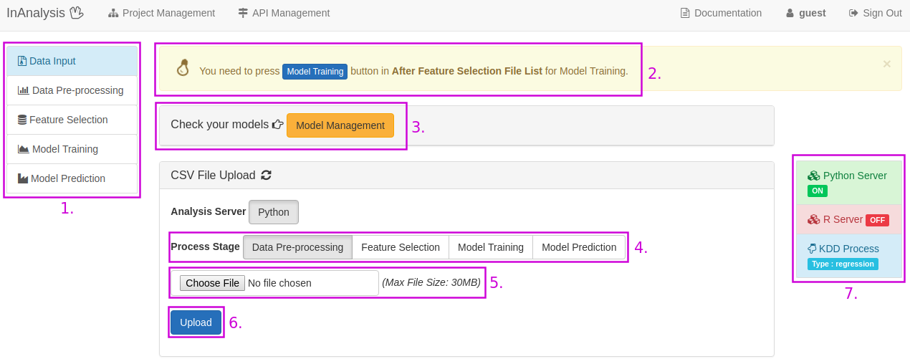
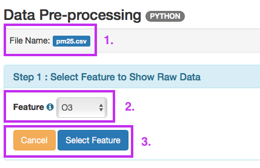
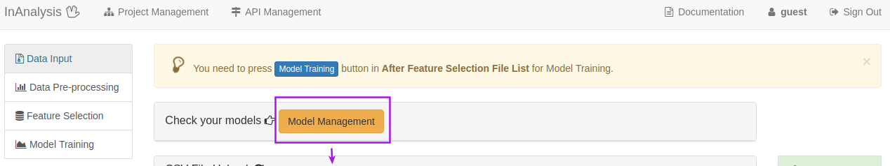

Introduction
迴歸分析是根據已知樣本的某些特徵，推論一個樣本的答案。迴歸分析問題是監督式學習的一種， 根據已知訓練區提供的樣本，通過計算選擇特徵參數，建立判別函數以對樣本進行推論。
Example
欲解決的問題
由連續三小時的大氣數據(O3、PM10、PM2.5、風速)來預測第四小時的PM2.5數值。
PM2.5資料欄位說明
1.O3(前一小時臭氧值)
2.PM10(前一小時PM10值)
3.PM25-3(前三小時PM2.5值)
4.PM25-2(前二小時PM2.5值)
5.PM25(前一小時PM2.5值)
6.WS_HR(前一小時風速值)
7.ANS(實際檢測到的PM2.5數值)
資料來源
環保署: 空氣品質測站＼歷年監測資料下載
建立訓練資料
下載pm2.5Train.csv作為訓練檔（ 下載 1.8 kB ）
建立測試資料
下載pm2.5Test.csv作為訓練檔（ 下載 1.8 kB ）
模型建立方法
用linear regression演算法建立預測模型
模型結果預覽

Step by Step
跟著以下流程操作示範，即可輕鬆建立PM2.5預測模型
1.建立專案 Create Project
建立Regression Project以進行KDD流程訓練模型，並可將模型Export成API

InAnalysis User Dashboard
1. 回到InAnalysis User Dashboard
2. 進入Project Management, 可新增、修改、刪除Project
3. 進入API Management, 可新增、修改、刪除API
4. Documentation, 教學網站連結與範例資料檔案
5. Machine Learning Server Situation, 顯示Server是否正常啟動
6. Number of Projects, 顯示使用者建立的Project數量
7. 進入Project Management, 可新增、修改、刪除Project
8. Number of API, 顯示使用者建立的API數量
9. 進入API Management, 可新增、修改、刪除API
我們在這個頁面點選2.或是7.進入Project Management, 開始機器學習的流程
Project Management
1. 選擇Project Type, 四種Project Type有不同的任務
2. 輸入Project的名稱
3. 新增Project
建立Regression專案
新增project成功後，下方的My Projects即會出現剛剛所新建的專案，點選 [KDD] 以開始機器學習流程。
2.檔案上傳 Data Input
上傳csv資料檔案以進行KDD流程
KDD：Data Input
1. 點選可看到KDD各個流程的詳細說明
2. 提示欄，建議使用者下一個步驟可以做什麼
3. Model Management，這個Project訓練出來的所有模型可在這邊瀏覽，修改資訊或Export成API
4. 選擇資料上傳的階段
5. 從本機端選擇資料
6. 點選進行資料上傳
KDD：Data Input - select label column
1. 選擇作為標記的資料（Regression可以作為標記的資料類型為：整數、浮點數），在這個範例，選取 "ANS" 作為標記
2. 儲存檔案
上傳完成會看到該資料的操作欄位
Data Information
1. 顯示上傳資料的檔案名稱
2. 點選可看到該資料的操作紀錄說明
3. 顯示該資料所在的Server
4. 顯示資料欄位數量
5. 顯示該資料被設為標籤的欄位名稱，若該資料無標籤則顯示「No Label」
6. 點選按鈕可對該資料進行各項操作處理，綠色為系統建議的下一步操作
7. 點選預覽整份資料
8. 點選可下載資料
9. 點選會將該資料刪除
我們點選7.Preview來預覽整份資料
Data Viewer
1. 正在預覽的資料檔案名稱，與檔案所在的Server
2. 顯示該資料的所有欄位名稱
3. 顯示該欄位的第一項資料
4. 顯示該欄位的資料型態
5. 顯示該欄位的資料平均值，若為非數值型態則會顯示「-」
6. 顯示該欄位的資料標準差，若為非數值型態則會顯示「-」
7. 點選可看到該欄位的所有資料分佈直方圖
8. 點選回到KDD流程
3.資料前處理 Data Pre-process
這個步驟可對資料進行缺值過濾、常態分佈離群值過濾、正規化等預處理
從Function欄位中, 選擇 [Data Pre-processing] 按鈕, 開始進行資料預處理(Pre-process)
Step 1
1. 正在處理的資料檔案名稱，與檔案所在的Server
2. 選擇欄位
3. 取消回到KDD流程頁面/預覽該欄位的資料分佈直方圖
Step 2
1. 對資料進行缺值過濾，如果該列資料有NAN則會刪除該列資料，這個步驟能夠確保訓練時不會因為資料不齊全而出現錯誤
2. 對該欄位資料進行利用常態分佈離群值過濾，1 std表示將過慮掉1個標準差以外的離群資料，0 std表示不對資料做離群值過濾
3. 取消處理動作回到Step 1選擇欄位
4. 執行上述處理並預覽該欄位處理過後的資料分佈直方圖
Step 3
1. 選擇Normalize的演算法
2. 選擇欲進行Normalize的資料欄位，進行Normalize能夠將資料Scale到相同的range
Step 4
1. 輸入處理過資料的新檔案名稱
2. 取消處理動作，不儲存處理過的新資料，並回到KDD流程頁面
3. 儲存處理過的新資料，並回到KDD流程頁面
這個範例將資料進行缺值過濾、常態分佈離群值過濾處理（
下載 檔案觀察資料變化，151.2 kB）。
完成前處理後的資料會顯示在Feature Selection Stage欄位之中
按下 [Feature-Selection] 進入特徵選擇頁面
4.特徵選擇 Feature Selection
這個步驟是利用Pearson Correlation演算法計算各個Feature間的關係程度,以作為選擇Feature的參考，按下 [Apply Algorithm]
Feature Selection
1. 勾選要保留的feature
2. Feature名稱
3. 此Feature的Mean值
4.Feature標準差
5.各個Feature間的關係係數及該欄平均關係係數，顏色越紅correlation越高
在這個範例我們選擇全部的feature。選擇完要使用的feature後，輸入新的檔名，並儲存或放棄此步驟。
5.模型訓練 Model Training
這個步驟能夠選擇演算法對資料進行模型訓練，並預覽訓練出來的模型
從功能欄點選Model Training，開始進行模型訓練
Model Training
1. 選擇模型訓練的演算法
2. 設定演算法參數，或直接使用預設值
2-1. Fit Intercept: 是否加上Ｙ軸截距
2-2. Normolize: 若 Fit Intercept = False，此欄位無效。若此欄為true，X會先以mean及I2-norm 做normolize
2-3. Copy X: 是否備份X。若False則覆寫
2-4. N Jobs: 要創的計算工作數量
3. 輸入模型名稱
4. 進行模型訓練
5. 回到KDD流程
Model Preview
1. 選擇兩個資料欄位
2. 顯示訓練好的模型圖
兩個檔案都分別進行模型訓練訓，練出來的兩個模型可以在Model Management頁面看到
Model Management
1. 模型名稱
2. 模型訓練使用的演算法
3. 訓練使用的檔案及參數
4. 將模型匯出成API
5. 修改模型資料
6. 刪除模型
6.模型預測 Model Prediction
這個步驟能夠利用已經訓練好的模型對新的資料進行預測，並顯示預測分類的結果及準確度

上傳要預測的檔案到[Model Prediction]這個Stage
從功能欄中點選 [Model Prediction]
選擇剛剛訓練好的Model，按下[Predict]，系統即會顯示RMSE(Root Mean Square Error)
「方均根偏移(root-mean-square deviation)或方均根差(root-mean-square error)
是一種常用的測量數值之間差異的量度(measure)，其數值常為模型預測的量或是被觀察到的估計量(estimator)。
方均根偏移代表預測的值和觀察到的值之差的樣本標準差(sample standard deviation)」
_(來源：維基百科)
7.建立API Export API
這個步驟能夠將訓練好的模型建立成API，以利更多的應用
選擇Export API的功能Set API Input
1. 輸入API的名稱，以及API功能描述
2. 輸入自訂的API Input Key
3. 輸入API Input描述
Set API Output
1. 輸入自訂的API Output Key
2. 輸入API Output描述
建立API後，會顯示API呼叫URL以及API輸入輸出的json格式
Show API Format
1. API的名稱
2. API的呼叫路徑
3. API Input格式
4. API Output格式
點選上方功能列的API ，可以檢視全部建立好的API
Model Training
1. 輸入API的名稱
2. API功能描述
3. API建立資訊
4. 編輯API
5. 刪除API
Machine Learning Canvas機器學習畫布
Machine Learning Canvas(機器學習畫布)的框架分為4個部分：問題定義、模型預測、模型學習和系統評估， 這個畫布能夠幫助機器學習團隊釐清開發應用時所會面臨的問題

Machine Learning Canvas_空白畫布可由此下載